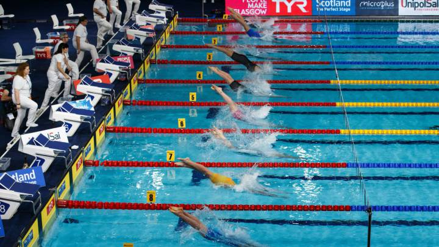
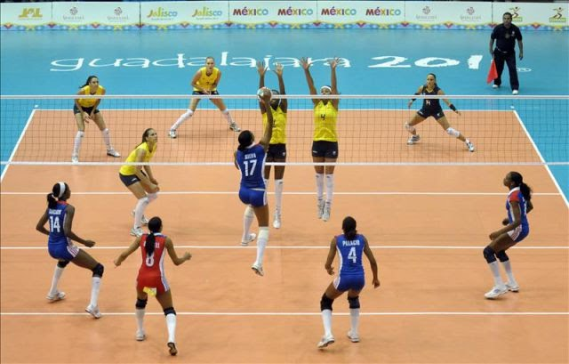
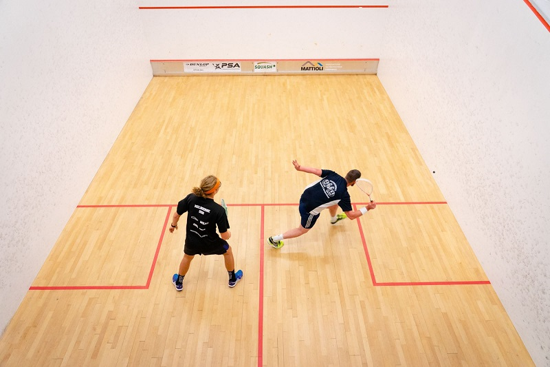

| 1 | GOLF | Es un deporte de precisión, cuyo objetivo es introducir una bola en los hoyos que están distribuidos en el campo con el menor número de golpes, utilizando para cada tipo de golpe uno de entre un conjunto de palos. |  |
| 2 | NATACIÓN | La natación es un deporte que la mayoría de las personas pueden practicar, sin importar su edad. Increíble resistencia cardiopulmonar, control de la presión y del sobrepeso y desarrollo de la mayor parte de los grupos musculares son algunos de sus beneficios, que se optimizan si se piensa en el bajo impacto que provoca en el cuerpo. |  |
| 3 | TENIS | El tenis es uno de los ejercicios más recomendables desde el punto de vista de la salud porque mejora la resistencia física y potencia la velocidad junto con la fuerza, siempre que se practique con prudencia y debida preparación. |  |
| 4 | VOLEY | El voleibol es uno de los deportes donde mayor es la paridad entre las competiciones femeninas y masculinas, tanto por el nivel de la competencia como por la popularidad, presencia en los medios y público que sigue a los equipos. Se necesitan 8 jugadores por equipo (2 de ellos femeninos). |  |
| 5 | SQUASH | El squash, además de ser un excelente regulador del peso corporal, también contribuye a mantener en forma y a agudizar los reflejos. Al poco peso de las raquetas se debe que no se produzcan en el squash las lesiones de codo, tan típicas del tenis. |  |
Diseñado por: Cecilia Guadalupe Martínez De León